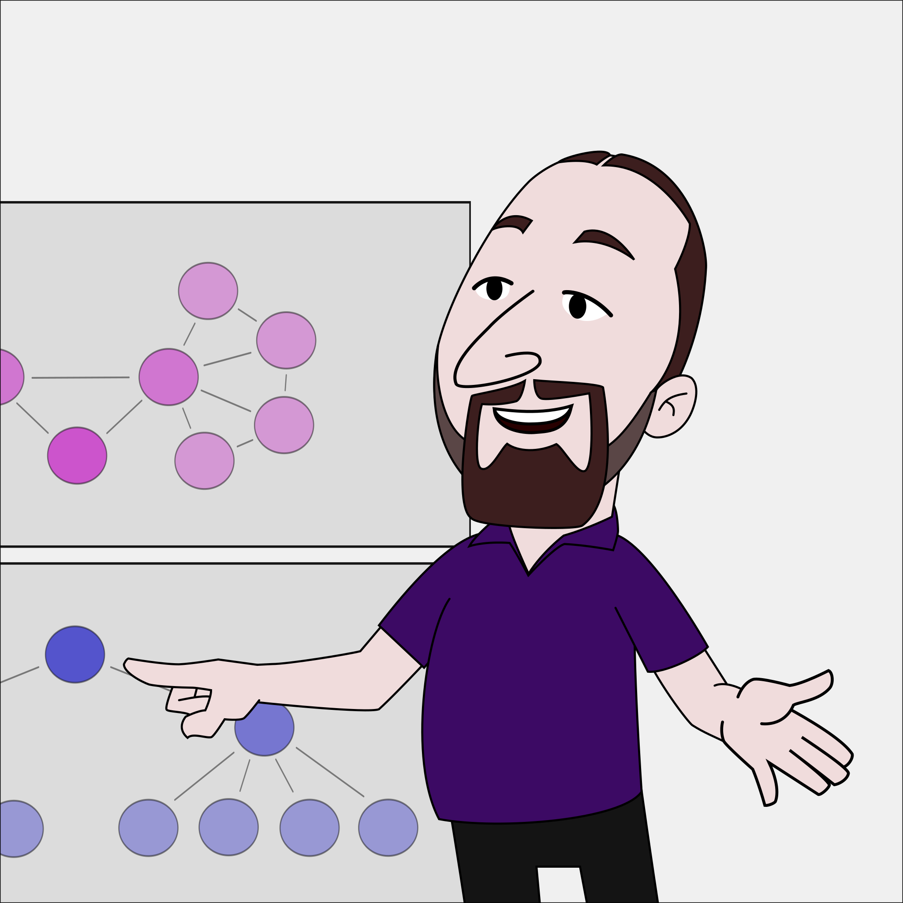

When delivery speeds up, coordination becomes the bottleneck.
AI can dramatically increase output. It can also increase confusion, competing priorities, and coordination overhead. I help product and engineering organisations keep the second from cancelling out the first.
Focus
Where work gets stuck between teams
Organisations rarely struggle because people lack skill or motivation. They struggle because the work that matters crosses team boundaries, reporting lines and competing priorities. Nobody owns the crossing. That cost is rarely measured, so it is rarely managed.
Decision latency
How long a decision takes to travel
Decisions that need three groups in a room spend most of their life waiting rather than being made. The delay is usually concentrated in one step, and not the step people suspect.
Team boundaries
Where the work is divided
Boundaries drawn for a smaller company keep operating long after the work has changed shape. Every crossing has a price, and most organisations have never counted it.
Stakeholder alignment
What drifts between conversations
Agreement reached in a meeting decays quietly until someone discovers it has gone. Which stakeholders drift, and how often they need bringing back, is designable rather than accidental.
Conflict and disagreement
What nobody is saying
Unspoken conflict between teams gets attributed to personalities when it is usually structural. Naming what a disagreement is actually about is what makes it workable.
Services
How I support organisations
Structure changes slowly, and it only holds when the people running it change how they work. So coaching usually runs alongside whatever is being restructured, and a workshop is how a group settles something that meetings have not. Which of the three you start with depends on where the work is stuck.
Leadership coaching
Weekly or bi-weekly, over several months
Sustained work with the leader who owns the problem and has to act. Sessions follow whatever is live that week rather than a syllabus, with time to examine difficult situations and prepare for conversations. The work runs alongside structural change.
Workshops and training
One or two days, on site, for a team or a leadership group
The group works on its own material rather than a case study. Typical subjects are how work crosses team boundaries, where decisions wait, and how stakeholders are kept aligned. People leave holding something they wrote themselves.

Organisational review
Two weeks, fixed scope and price
Interviews across the teams in scope, a mapping workshop, and a short written recommendation naming the few changes worth making and the ones worth leaving alone. Longer work follows when the recommendation is taken up.
Clients
Organisations I have worked with
Simon’s guidance has been transformative for leaders at all levels: Executives, product managers, and team coaches. What sets him apart is his exceptional ability to go beyond traditional coaching methods. His wealth of experience and unique approach have provided our team with invaluable insights, fostering both individual growth and sustainable organisational improvement.
I am very happy that Simon is an inspiring element of our journey. With his great experience with different organizations and his practical support based on very good tool knowledge, we have improved our planning phase, supported teams and started a promising process to take our organization with 40 teams in 4 locations on 2 continents to the next level.
I had the pleasure of working with Simon for several years on various projects focused on change management, leadership coaching, and agile working methods. Simon consistently demonstrated exceptional expertise and dedication. He possesses excellent communication skills and is able to effectively lead and coach individuals at all levels of an organization. Simon has a proven track record of success, and is an invaluable asset to any team looking to drive positive change and to achieve goals.
My experience was fantastic. Simon is able to take complex problems and complex workflows, understand them, and identify the areas that can help improve. He’s very patient and incredibly enthusiastic about his job. I learned a lot from him.
Simon is a very professional coach. His experience and approach facilitate the change design and implementation. I would recommend Simon for large and difficult change management projects.
Experience
How I came to this work
I have worked in software and product development for more than two decades. Since 2015, my focus has been coaching, training, and organisational change, first at agile42 and independently since 2023. Before that I ran engineering organisations and worked as an interim CTO, giving me first-hand experience of the leadership and coordination challenges I help clients address today.
since 2023
Consultant and coach, independent
Coaching the leadership group at BD Rowa through a period of organisational change. Improving how software development, product management, release management and quality management work together at Siemens, across four locations and more than forty teams. Strengthening product management practice at Kaiko Systems.
2015 - 2023
Coach and trainer, agile42
Clients spanned healthcare, manufacturing, automotive, finance, cybersecurity, and education. Leadership and collaboration at Volkswagen’s Future Center Europe, product development at SumUp, a portfolio system for Bundesdruckerei IT, and JTI’s Agile Champion programme reaching 20,000 employees worldwide.
2011 - 2015
Interim CTO, Rocket Internet and foodpanda
Running product and engineering organisations through rapid growth and international expansion. At Rocket Internet, launching new ventures with teams of up to a hundred people. At foodpanda, product development across more than thirty countries.
2009 - 2011
Co-founder and CTO, Motivado
Co-founded an interactive video coaching platform with software developers and psychologists. The company was recognised by Germany’s Federal Ministry for Economy and Technology for its approach to personal development.
2001 - 2009
Software developer
Freelance software and web development in travel and e-commerce, ranging from application architecture and large-scale refactoring to frontend and backend development. Also worked as an animator on the award-winning short film Judas & Jesus.
Contact
Getting in touch
If coordination has become a bottleneck in your organisation, I’d be happy to discuss your situation.
Or find me on LinkedIn.
Impressum
Angaben gemäß § 5 DDG
Simon Sablowski
Alt-Stralau 5
10245 Berlin
Kontakt
Umsatzsteuer
Umsatzsteuer-Identifikationsnummer: DE405789371
Datenschutzerklärung
Datenschutz auf einen Blick
Allgemeine Hinweise
Die folgenden Hinweise geben einen einfachen Überblick darüber, was mit Ihren personenbezogenen Daten passiert, wenn Sie diese Website besuchen. Personenbezogene Daten sind alle Daten, mit denen Sie persönlich identifiziert werden können. Ausführliche Informationen zum Thema Datenschutz entnehmen Sie unserer unter diesem Text aufgeführten Datenschutzerklärung.
Datenerfassung auf dieser Website
Wer ist verantwortlich für die Datenerfassung auf dieser Website?
Die Datenverarbeitung auf dieser Website erfolgt durch den Websitebetreiber. Dessen Kontaktdaten können Sie dem Abschnitt „Hinweis zur Verantwortlichen Stelle“ in dieser Datenschutzerklärung entnehmen.
Wie erfassen wir Ihre Daten?
Ihre Daten werden zum einen dadurch erhoben, dass Sie uns diese mitteilen. Andere Daten werden automatisch beim Besuch der Website durch unsere IT-Systeme erfasst. Das sind vor allem technische Daten (z. B. Internetbrowser, Betriebssystem oder Uhrzeit des Seitenaufrufs). Die Erfassung dieser Daten erfolgt automatisch, sobald Sie diese Website betreten.
Wofür nutzen wir Ihre Daten?
Ein Teil der Daten wird erhoben, um eine fehlerfreie Bereitstellung der Website zu gewährleisten. Sofern über die Website Verträge geschlossen oder angebahnt werden können, werden die übermittelten Daten auch für Vertragsangebote, Bestellungen oder sonstige Auftragsanfragen verarbeitet.
Welche Rechte haben Sie bezüglich Ihrer Daten?
Sie haben jederzeit das Recht, unentgeltlich Auskunft über Herkunft, Empfänger und Zweck Ihrer gespeicherten personenbezogenen Daten zu erhalten. Sie haben außerdem ein Recht, die Berichtigung oder Löschung dieser Daten zu verlangen. Wenn Sie eine Einwilligung zur Datenverarbeitung erteilt haben, können Sie diese Einwilligung jederzeit für die Zukunft widerrufen. Außerdem haben Sie das Recht, unter bestimmten Umständen die Einschränkung der Verarbeitung Ihrer personenbezogenen Daten zu verlangen. Des Weiteren steht Ihnen ein Beschwerderecht bei der zuständigen Aufsichtsbehörde zu.
Hierzu sowie zu weiteren Fragen zum Thema Datenschutz können Sie sich jederzeit an uns wenden.
Hosting
Externes Hosting
Diese Website wird extern gehostet. Die personenbezogenen Daten, die auf dieser Website erfasst werden, werden auf den Servern des Hosters / der Hoster gespeichert. Hierbei kann es sich v. a. um IP-Adressen, Kontaktanfragen, Meta- und Kommunikationsdaten, Vertragsdaten, Kontaktdaten, Namen, Websitezugriffe und sonstige Daten, die über eine Website generiert werden, handeln.
Das externe Hosting erfolgt zum Zwecke der Vertragserfüllung gegenüber unseren potenziellen und bestehenden Kunden (Art. 6 Abs. 1 lit. b DSGVO) und im Interesse einer sicheren, schnellen und effizienten Bereitstellung unseres Online-Angebots durch einen professionellen Anbieter (Art. 6 Abs. 1 lit. f DSGVO).
Unser Hoster wird bzw. werden Ihre Daten nur insoweit verarbeiten, wie dies zur Erfüllung seiner Leistungspflichten erforderlich ist und unsere Weisungen in Bezug auf diese Daten befolgen. Wir setzen folgenden Hoster ein:
Carrd Inc.
231 Public Square Suite 300 PMB 12
Franklin, TN 37064
USA
Allgemeine Hinweise und Pflichtinformationen
Datenschutz
Die Betreiber dieser Seiten nehmen den Schutz Ihrer persönlichen Daten sehr ernst. Wir behandeln Ihre personenbezogenen Daten vertraulich und entsprechend den gesetzlichen Datenschutzvorschriften sowie dieser Datenschutzerklärung.
Wenn Sie diese Website benutzen, werden verschiedene personenbezogene Daten erhoben. Personenbezogene Daten sind Daten, mit denen Sie persönlich identifiziert werden können. Die vorliegende Datenschutzerklärung erläutert, welche Daten wir erheben und wofür wir sie nutzen. Sie erläutert auch, wie und zu welchem Zweck das geschieht.
Wir weisen darauf hin, dass die Datenübertragung im Internet (z. B. bei der Kommunikation per E-Mail) Sicherheitslücken aufweisen kann. Ein lückenloser Schutz der Daten vor dem Zugriff durch Dritte ist nicht möglich.
Hinweis zur verantwortlichen Stelle
Die verantwortliche Stelle für die Datenverarbeitung auf dieser Website ist:
Simon Sablowski
Alt-Stralau 5
10245 Berlin
Verantwortliche Stelle ist die natürliche oder juristische Person, die allein oder gemeinsam mit anderen über die Zwecke und Mittel der Verarbeitung von personenbezogenen Daten (z. B. Namen, E-Mail-Adressen o. Ä.) entscheidet.
SSL- bzw. TLS-Verschlüsselung
Diese Seite nutzt aus Sicherheitsgründen und zum Schutz der Übertragung vertraulicher Inhalte, wie zum Beispiel Bestellungen oder Anfragen, die Sie an uns als Seitenbetreiber senden, eine SSL- bzw. TLSVerschlüsselung. Eine verschlüsselte Verbindung erkennen Sie daran, dass die Adresszeile des Browsers von „http://“ auf „https://“ wechselt und an dem Schloss-Symbol in Ihrer Browserzeile.
Wenn die SSL- bzw. TLS-Verschlüsselung aktiviert ist, können die Daten, die Sie an uns übermitteln, nicht von Dritten mitgelesen werden.
Datenerfassung auf dieser Website
Anfrage per E-Mail
Wenn Sie uns per E-Mail oder Telefon kontaktieren, wird Ihre Anfrage inklusive aller daraus hervorgehenden personenbezogenen Daten (Name, Anfrage) zum Zwecke der Bearbeitung Ihres Anliegens bei uns gespeichert und verarbeitet. Diese Daten geben wir nicht ohne Ihre Einwilligung weiter.
Die Verarbeitung dieser Daten erfolgt auf Grundlage von Art. 6 Abs. 1 lit. b DSGVO, sofern Ihre Anfrage mit der Erfüllung eines Vertrags zusammenhängt oder zur Durchführung vorvertraglicher Maßnahmen erforderlich ist. In allen übrigen Fällen beruht die Verarbeitung auf unserem berechtigten Interesse an der effektiven Bearbeitung der an uns gerichteten Anfragen (Art. 6 Abs. 1 lit. f DSGVO) oder auf Ihrer Einwilligung (Art. 6 Abs. 1 lit. a DSGVO) sofern diese abgefragt wurde; die Einwilligung ist jederzeit widerrufbar.
Die von Ihnen an uns per Kontaktanfragen übersandten Daten verbleiben bei uns, bis Sie uns zur Löschung auffordern, Ihre Einwilligung zur Speicherung widerrufen oder der Zweck für die Datenspeicherung entfällt (z. B. nach abgeschlossener Bearbeitung Ihres Anliegens). Zwingende gesetzliche Bestimmungen – insbesondere gesetzliche Aufbewahrungsfristen – bleiben unberührt.
Quelle: e-recht24.de